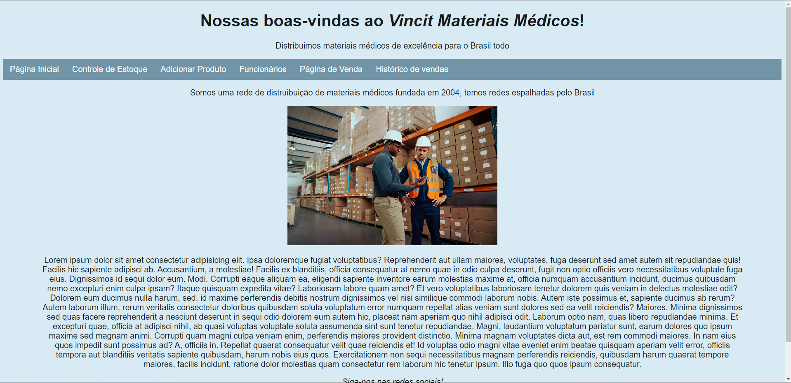
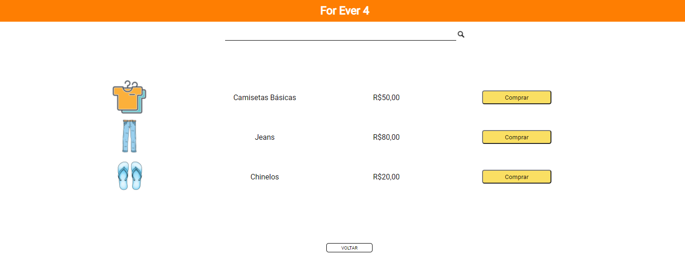
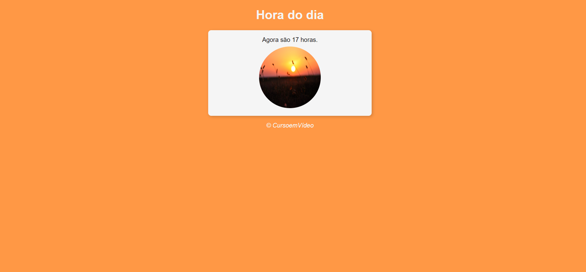

Projeto loja - Labenu
Realizei o projeto de construir uma loja fictícia, utilizando conhecimentos em html e CSS, realizei a estilização da tabela e a criação de um formulário.
Projeto conserto de CSS - Labenu
Nesse projeto realizei o conserto de bugs do código, onde aprendi sobre centralizar itens e utilizar efeitos dos buttons de hover e action.
Projeto - Pessoal
Realizei um curso pela plataforma do youtube, no canal do curso em vídeo e nesse projeto tem uma lógica em javascript para determinar a hora do dia e a mudança da cor do fundo e da imagem, aprendi e apliquei conceitos DOM e centralização de imagens e divs
